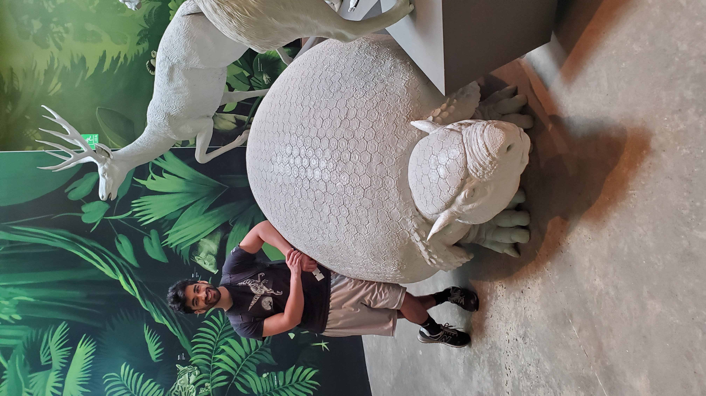

I'm a quantitative researcher. Until recently I was a theoretical particle physicist.
You can find information here about miscellaneous things I've worked on and my physics research.
I was an Oehme postdoctoral fellow at the University of Chicago's Enrico Fermi Institute from 2024 to 2026. Prior to that, I obtained my Ph.D. in physics at Cornell University; my advisor was Csaba Csáki. I completed my undergraduate studies at Carleton University in my hometown of Ottawa, Ontario. I majored in physics and biology, with a minor in math.
Aside from physics, I'm also very interested in music, including playing, listening, theory, and writing. My spare time is mostly spent reading, playing guitar, and baking. My favourite dinosaur is a tossup between Microraptor and Sinornithosaurus.
Contact me: ai279spamspamspam@cornell.edu | LinkedIn
Photo credit: Olivia Harris.